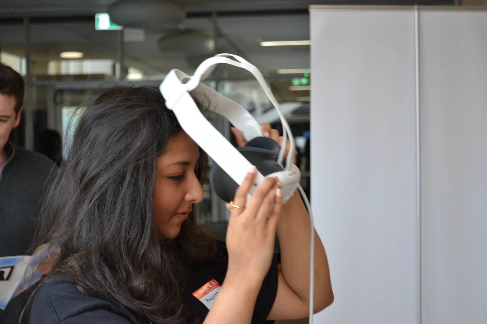

Level select
Work
Case studies in enterprise software, XR and mobile, plus side quests in games, 3D and visual design.
Case studies

LVL 01 · XR · Unity
Custodians of Memory
Led a 5-person team to build a VR experience that lets players step inside three iconic paintings. Showcase visitors called it “magical.”
LVL 02 · Research · VR
Is VR esports Olympic-ready?
A 29-person lab study of a VR-native game. Heart rates averaged up to 124 bpm, and the findings became six design principles for Olympic-ready VR sports.
LVL 03 · Enterprise SaaS · AI
Why customers stop at one capability
Research into why IBM Maximo customers don't adopt Field Service Management, from 7 expert interviews and a journey map to a maturity model and an AI recommender proof of concept.

LVL 04 · AR · Health
AR medicine scanner
Scan a medicine strip to see dosage, safety advice and drug interactions at a glance. Shaped by interviews with patients, parents and elderly users, and prototyped in Adobe Aero.

LVL 05 · Mobile · UI/UX
Vow
A wedding planner app for finding, touring and booking venues remotely, shaped by 5 interviews and 2 rounds of usability testing.
Side quests
Playground
Games, web and narrative experiments.